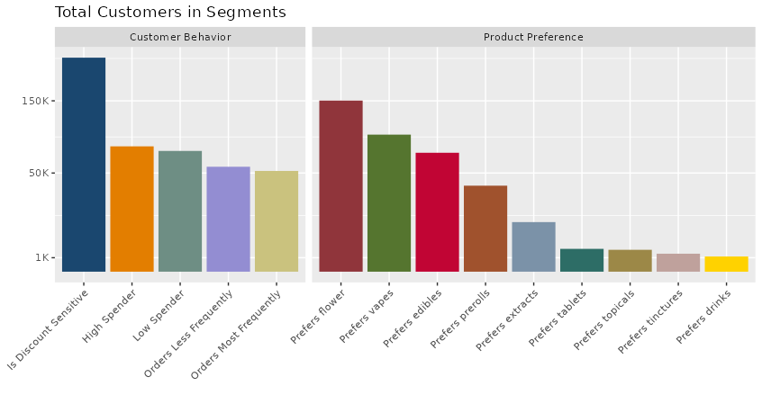

Note, this post uses the terms Customer, Consumer, and Buyers interchangably to refer to the end customer of cannabis products purchased from our retail clients.
Customer Segment Definitions
The set of new segments centers around customer preferences for particular product categories, as well as purchase habits and buying behavior. First, let’s discuss product preference segments
Category Exclusive Consumers
I’ve identified 9 product categories that are used to classify customerrs based on their preference for each category. All customers classified here are regular customers. First, let’s review the 9 product categories:
- Vapes
-
Cartridges, Pods, Disposables
- Extracts
-
Dab, Wax, Shatter, Budder, Live Resin, Syringe products, etc.
- Tinctures
-
Tinctures products
- Topicals
-
Ointment, lotion, balm, salve, bath bombs, bath salts, etc.
- Tablets
-
Tablets, capsules, pills, excludes lozanges and mints
- Drinks
-
Beverage products only, includes syrups and drink mixers
- Edibles
-
Candy, gummies, sweets, baked goods, lozanges, mints, etc.
- Flower
-
Prepackaged, small batches, various quantities, etc.
- Prerolls
-
Pre-rolled joints, blunts, infused & non-infused
For every category above, there’s a segment of customers that mostly prefers that category. These customers are called category exclusive consumers. A category exclusive customer is someone who has spent at least 75% of their total dollars towards products of a particular category over the course of many regular orders over a period of time.
Discount Sensitive Consumers
Discount senstive consumers are repeat customers whose average discount rate is above the majority of the rest of the customers, and furthermore, their discount rate impacts their tendancy towards a higher sales velocity (they come back more often as discount rates increase, and less frequently as they decline). Its important to note that contrary to intuition, not all customers respond to discount rates just like not all products are discount elastic (lower price doesn’t always drive more demand).
Most and Least Frequent Buyers
Frequency has been identified as a major trait describing customer behavior. The flags Most Frequent and Least Frequent refer to repeat customers whose days between orders falls in the smallest group (less days between these customer’s orders) and largest group (more days between their orders). Frequency often impacts factors such as (1) how large or small the order size will be (2) how often will the consumer purchase a product they’ve previously never purchased.
High vs Low Dollar Spenders
These two segments are pretty straightforward. High dollar spenders are customers that have a historical order size that falls in the highest quartile group; while low dollar spenders have an average historical order size falling in the lowest quartile group. In the case of Verano, we can see from the table below that high spenders have an average order total of $195 (vs $44 for Low spenders).
Customer Segment Statistics
The following plot highlights the segments defined above, as well as how many Verano customers fall in each group:

The following table demonstrates the differences between these segments in various summary statistics.
| Segment | Orders Per Day | Average Age | Average Order Total | Average Item Price | Average Orders Per Customer | Total Customers |
|---|---|---|---|---|---|---|
| All | 3,766 | 40 | $98 | $45 | 4 | 2,104,739 |
| Prefers Extracts | 80 | 35 | $104 | $51 | 9 | 12,627 |
| Prefers Vapes | 530 | 36 | $103 | $52 | 8 | 96,506 |
| Prefers Tinctures | 5 | 58 | $98 | $49 | 3 | 1,661 |
| Prefers Flowers | 985 | 42 | $96 | $52 | 11 | 150,429 |
| Prefers Tablets | 11 | 53 | $96 | $35 | 3 | 2,675 |
| Prefers Topicals | 5 | 59 | $94 | $48 | 2 | 2,459 |
| Prefers Edibles | 211 | 48 | $90 | $32 | 4 | 72,646 |
| Prefers Drinks | 5 | 45 | $76 | $27 | 3 | 1,183 |
| Prefers Prerolls | 171 | 39 | $52 | $26 | 7 | 37,997 |
| Is Discount Senstive | 2,373 | 40 | $97 | $45 | 21 | 235,299 |
| Orders Most Frequently | 1,245 | 40 | $89 | $43 | 40 | 52,131 |
| Orders Least Frequently | 194 | 41 | $111 | $46 | 6 | 56,552 |
| High Spender | 617 | 44 | $195 | $54 | 15 | 80,701 |
| Low Spender | 922 | 38 | $44 | $33 | 22 | 74,899 |
Segment Comparisons and Other Insights
Here are some takeaway insights from the summary statistics table above:
The segment with the lowest average age (35) is customers that prefer extracts. The groups with the highest average age is Topicals (59), Tinctures (58), and Tablets (53).
Customers that prefer prerolls have a comparitively low average order total ($52), which is only slightly greater than the group of customers that are classified as Low Spenders ($44)
Besides the High Spender group, the segments with the highest average order total are those that prefer Extracts ($104) and those that prefer Vapes ($103)
Customers that order most frequently have a lower average order total ($89) vs customers that order least frequently ($111)
High spenders tend to be older than low spenders (44 vs 38)